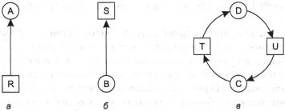
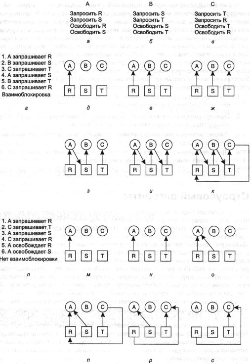

Условия взаимоблокировки
В [70] Коффман (Coffman) и другие исследователи доказали, что для возникновения
ситуации взаимоблокировки должны выполняться четыре условия:
1. Условие взаимного исключения. Каждый ресурс в данный момент или отдан
ровно одному процессу, или доступен.
2. Условие удержания и ожидания. Процессы, в данный момент удерживающие полученные
ранее ресурсы, могут запрашивать новые ресурсы.
3. Условие отсутствия принудительной выгрузки ресурса. У процесса нельзя
принудительным образом забрать ранее полученные ресурсы. Процесс, владеющий
ими, должен сам освободить ресурсы.
4. Условие циклического ожидания. Должна существовать круговая последовательность
из двух и более процессов, каждый из которых ждет доступа к ресурсу, удерживаемому
следующим членом последовательности.
Для того чтобы произошла взаимоблокировка, должны выполниться все эти четыре
условия. Если хоть одно из них отсутствует, тупиковая ситуация невозможна.
Следует отметить, что каждое условие относится к стратегии определения того,
что в системе позволяется, а что — нет. Может ли данный ресурс быть отдан одновременно
больше чем одному процессу? Может ли процесс удерживать один ресурс и запрашивать
второй? Можно ли отнять ресурс у процесса? Может ли существовать циклическое
ожидание? Позже мы увидим, как можно разрушать взаимоблокировки с помощью сведения
«на нет» некоторых из этих условий.
Моделирование взаимоблокировок
В [156] Холт (Holt) показал, как можно смоделировать четыре условия возникновения
тупиков, используя направленные графы. Графы имеют два вида узлов: процессы,
показанные кружочками, и ресурсы, нарисованные квадратиками. Ребро, направленное
от узла ресурса (квадрат) к узлу процесса (круг), означает, что ресурс ранее
был запрошен процессом, получен и в данный момент используется этим процессом.
На рис. 3.1, а ресурс R в настоящее время отдан процессу A.

Рис. 3.1. Графы распределения
ресурсов: ресурс занят (а); запрос ресурса (б); взаимоблокировка (в)
Ребро, направленное от процесса к ресурсу, означает, что процесс в данный
момент блокирован и находится в состоянии ожидания доступа к этому ресурсу.
На рис. 3.1, б процесс В ждет ресурс S. На рис. 3.1, в
мы видим взаимоблокировку: процесс С ожидает ресурс Т, удерживаемый
в настоящее время процессом D. Процесс D вовсе не намеревается
освобождать ресурс Т, потому что он ждет ресурс U, используемый
процессом С. Оба процесса будут ждать до бесконечности.
Цикл в графе означает наличие взаимоблокировки, циклично включающей процессы
и ресурсы (предполагается, что в системе есть по одному ресурсу каждого вида).
В этом примере циклом является последовательность C-T-D-U-C.
Теперь рассмотрим пример того, как можно использовать графы ресурсов. Представим,
что у нас есть три процесса: А, В и С, и три ресурса: R, S и Т.
Последовательность запросов и возвратов ресурсов для трех процессов показаны
на рис. 3.2, а—в. Операционная система может запустить любой незаблокированный
процесс в любой момент времени, значит, она может решить запустить сначала процесс
А. Процесс А будет выполняться до тех пор, пока не закончит всю
свою работу, затем будет запущен процесс В до его завершения и, наконец,
процесс С.
Такой порядок не приводит к взаимоблокировке (потому что при нем не возникает
соперничества за использование ресурсов), но при нем также вообще нет параллельной
работы. Кроме запросов и возвратов ресурсов, процессы выполняют вычисления и
ввод-вывод данных. Когда процессы работают последовательно, невозможна ситуация,
при которой один процесс использует процессор, в то время как другой ждет завершения
операции ввода-вывода. Таким образом, строго последовательная работа процессов
не может быть оптимальной. С другой стороны, если вообще ни один процесс не
выполняет операций ввода-вывода, алгоритм «кратчайшая задача — первая»
работает лучше, чем циклический, поэтому в некоторой обстановке последовательный
запуск всех процессов может быть наилучшим.
Теперь предположим, что процессы выполняют как расчеты, так и ввод-вывод,
так что циклический алгоритм планирования является рациональным. Запросы ресурсов
могут происходить в порядке, указанном на рис. 3.2, г. Если эти шесть
запросов будут осуществлены в такой последовательности, в результате мы получим
шесть графов, показанных на рис. 3.2, д—к. После запроса 4 процесс А
блокируется в ожидании ресурса S (рис. 3.2, з). На двух следующих шагах
также блокируются процессы В и С, в конечном счете приводя к циклу
и взаимоблокировке на рис. 3.2, к.
Однако, как мы упоминали ранее, операционная система не обязана запускать
процессы в каком-то особом порядке. В частности, если выполнение отдельного
запроса приводит в тупик, операционная система может просто приостановить процесс
без удовлетворения запроса (то есть не выполняя план процесса) до тех пор, пока
это безопасно. На рис. 3.2 операционная система могла бы приостановить процесс
В вместо того, чтобы отдавать ему ресурс 5, если бы она знала о предстоящей
взаимоблокировке. Работая только с процессами А и С, мы могли бы получить
порядок запросов ресурсов и их возвратов, продемонстрированный на рис. 3.2,
л, вместо показанного на рис. 3.2, г. Такая последовательность действий
отражена графами на рис. 3.2, м—с, и она не приводит к взаимоблокировке.
После шага с процесс В может получить ресурс S, потому что
процесс А уже закончил свою работу, а процесс С имеет в своем
распоряжении все необходимые ему ресурсы. Даже если затем процесс В,
когда он запросит ресурс Т, будет заблокирован, система не попадет в
тупик. Процесс В всего лишь будет ждать завершения работы процесса С.

Рис. 3.2. Пример возникновения
взаимоблокировки и способы избежать ее
Позже в этой главе мы изучим подробный алгоритм для принятия решений о распределении
ресурсов, которые не приведут к взаимоблокировке. В данный момент важно понять,
что графы ресурсов являются инструментом, позволяющим нам увидеть, станет ли
заданная последовательность запросов/возвратов ресурсов причиной взаимоблокировки.
Мы всего лишь шаг за шагом осуществляем запросы и возвраты ресурсов и после
каждого шага проверяем граф на содержание циклов. Если они есть, мы зашли в
тупик; если нет, значит, взаимоблокировки тоже нет. Хотя мы рассматривали графы
ресурсов для случая, когда в системе присутствует по одному ресурсу каждого
типа, графы также можно построить для обработки ситуации с несколькими одинаковыми
ресурсами [156]. Вообще говоря, при столкновении с взаимоблокировками используются
четыре стратегии.
1. Пренебрежение проблемой в целом. Если вы проигнорируете проблему, возможно,
затем она проигнорирует вас.
2. Обнаружение и восстановление. Позволить взаимоблокировке произойти, обнаружить
ее и предпринять какие-либо действия.
3. Динамическое избежание тупиковых ситуаций с помощью аккуратного распределения
ресурсов.
4. Предотвращение с помощью структурного опровержения одного из четырех условий,
необходимых для взаимоблокировки.
Мы по очереди изучим каждый из этих методов в следующих четырех разделах.